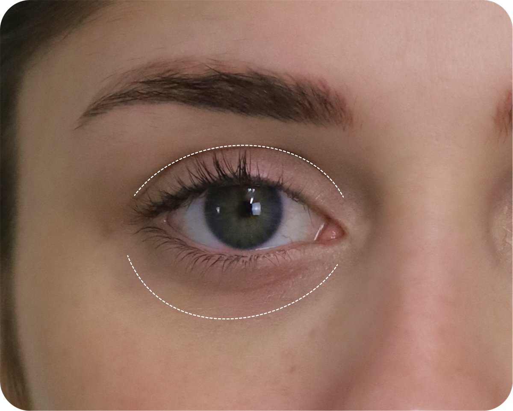

1-2 Horas
Execução delicada com instrumental microcirúrgico e hemostasia rigorosa para reduzir equimoses e acelerar a recuperação.
A blefaroplastia remove o excesso de pele e bolsas palpebrais, devolvendo descanso e amplitude visual sem alterar o formato dos seus olhos.

Quando a flacidez das pálpebras superiores pesa sobre os cílios ou as bolsas inferiores acentuam olheiras profundas, o rosto aparenta exaustão mesmo após uma boa noite de sono. A cirurgia restaura a abertura e o frescor do olhar com cicatrizes ocultas nas dobras naturais.
A região periorbital possui a pele mais delicada do corpo humano. O Dr. Márcio Carlos de Freitas conduz a blefaroplastia com técnica conservadora e precisa, evitando olhos encovados ou tracionados. O objetivo é rejuvenescer a moldura ocular preservando sua expressão e a proteção natural da córnea.
Remoção milimétrica do excesso cutâneo e muscular com incisão posicionada exatamente na prega natural da pálpebra, tornando a cicatriz praticamente invisível.
Tratamento conservador das bolsas de gordura por via transconjuntival ou subciliar, suavizando a transição entre a pálpebra inferior e a maçã do rosto.
Respeito rigoroso ao tônus palpebral e ao fechamento completo dos olhos, unindo ampliação do campo visual periférico e conforto ocular duradouro.


Parâmetros objetivos e rigor hospitalar aplicados a
cada etapa da sua cirurgia.
Execução delicada com instrumental microcirúrgico e hemostasia rigorosa para reduzir equimoses e acelerar a recuperação.
Anestesia local associada à sedação assistida por médico anestesiologista ou anestesia geral, garantindo tranquilidade total.
Alta hospitalar poucas horas após o procedimento, com orientações completas para o cuidado domiciliar imediato.
Incisões alojadas no sulco palpebral superior e linha subciliar ou interna, imperceptíveis após a maturação.
Exame clínico detalhado da anatomia palpebral, posição das sobrancelhas, filme lacrimal e exames pré-operatórios.
Realizada em centro cirúrgico equipado com monitorização multiparamétrica e total rigor de biossegurança.
Pós-operatório leve, indolor e de rápida retomada social.
A recuperação da blefaroplastia costuma surpreender pela ausência de dor significativa. Edema leve e pequenas manchas arroxeadas ao redor dos olhos são esperados nos primeiros dias e respondem rapidamente às compressas frias.
A equipe do Dr. Márcio acompanha de perto cada etapa da cicatrização, orientando o uso de colírios lubrificantes, proteção solar e cuidados com as suturas até a alta definitiva.
Repouso relativo com cabeceira elevada, compressas geladas com soro fisiológico sobre as pálpebras e uso de colírios lubrificantes.
Retorno presencial ao consultório para remoção delicada dos fios de sutura. Grande parte do inchaço inicial já terá regredido.
Retorno confortável às atividades profissionais e sociais, com liberação para uso de maquiagem leve e caminhadas.
Acomodação completa da pele palpebral e clareamento progressivo da fina linha cicatricial, revelando um olhar descansado e natural.
Devolva leveza, expressão e jovialidade ao seu olhar com segurança médica. Agende uma consulta presencial minuciosa com o Dr. Márcio Carlos de Freitas em Jaraguá do Sul.